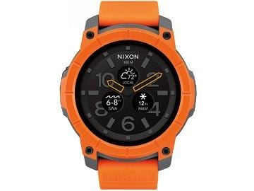

Nixon The Mission

冲浪滑雪玩家的硬核三防表，极限运动血统。
客观评测
Nixon The Mission 是与谷歌合作的极限运动智能手表，100 米防水与不锈钢壳体加防撞聚合物护角，专为冲浪、滑雪等场景设计，实测可湿手操作触摸屏。内置气压高度计、温度计与 GPS/GLONASS，支持 Surfline 冲浪点位与雪场天气数据。搭载骁龙 Wear 平台，Android Wear 系统，实测续航约一天，重量超过 100 克，是名副其实的腕上硬汉。
主观点评
The Mission 长得就像它的目标用户：冲浪板旁、雪道边的叛逆装备。厚实的护角与粗犷表圈戴在腕上是明确的风格宣言，潮牌手表的审美撞上智能内核，冲突却和谐。一天一充对户外整天玩耍的人来说是硬伤，但出发前充满电，下水前看一眼浪况数据的体验至今难忘。它是智能表史上最特立独行的跨界实验之一。
优点与不足
- 100 米防水加防撞护角，冲浪滑雪放心戴
- Surfline 与雪况数据联动，玩家实用
- 造型个性鲜明，街头辨识度高
- 续航仅一天左右
- 重量超过 100 克，日常佩戴沉
- Android Wear 已停止支持
参数规格
| 屏幕 | 1.39 英寸 AMOLED 圆形屏（可湿手操作） |
|---|---|
| 传感器 | 加速度计、陀螺仪、气压高度计、温度计、电子罗盘 |
| 定位 | GPS + GLONASS |
| 防水 | 100 米防水（专为冲浪、滑雪设计） |
| 电池/续航 | 约 1 天（GPS 使用下更短） |
| 系统 | Android Wear |
| 兼容性 | Android / iOS（基础支持） |
| 表壳 | 不锈钢表壳 + 防撞聚合物护角 |
| 防护 | 防撞防刮，专为极限运动设计 |
| 重量 | 约 100 克以上 |